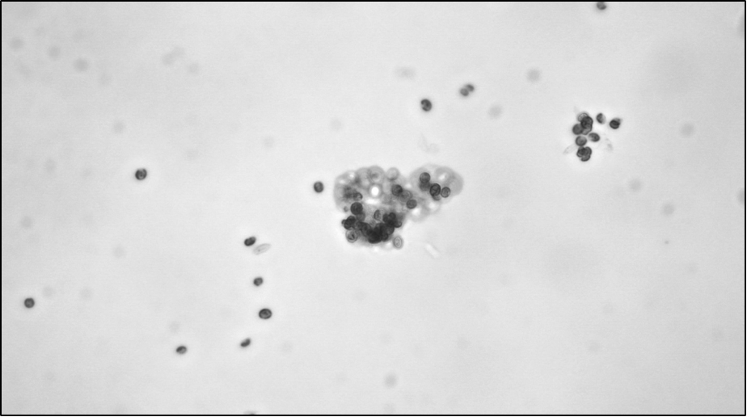
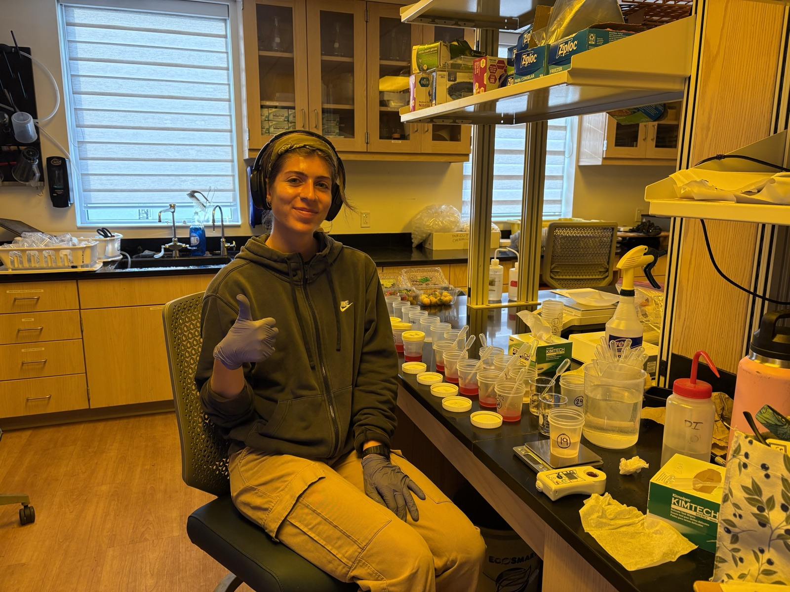

Applied Biology · Sustainability Studies · University of Florida
Studying algae. Applying it to sustainability.
UNDERSTANDING ALGAE,
APPLYING IT TO AGRICULTURE,
BUILDING WHAT SUSTAINABILITY
LOOKS LIKE NEXT.

Algae cells, microscopy
Leachate sampling, labYield increase in 'Sweet Sensation' strawberries with algae biostimulant application
Yield decrease in 'Florida Medallion' under the same treatment — response is cultivar-dependent
Independent, UF/IFAS-funded honors thesis testing an algae-based (Chlorella vulgaris) biostimulant on organic, high-tunnel strawberry production. Split-plot field design, two cultivars, two fertigation rates — leachate nutrient dynamics, fruit yield, and disease incidence tracked over an 8-week harvest, analyzed in SAS and R. Presented at the UF Honors Thesis Symposium, Spring 2026.
Separately, I researched supernatant extraction methods for Cyanothece, a nitrogen-fixing cyanobacterium studied as a renewable, clean-energy feedstock — under a PhD student's guidance at UF.
New York Fashion Week runway experience, and a growing interest in algae as material and inspiration in sustainable fashion — most recently explored at the Sustainable Design Impact Hub's FashionXDeepTech event.